Khi những đợt nắng nóng cực đoan kéo dài, nguồn năng lượng được kỳ vọng là trụ cột của tương lai xanh lại đối mặt với chính thách thức từ khí hậu.
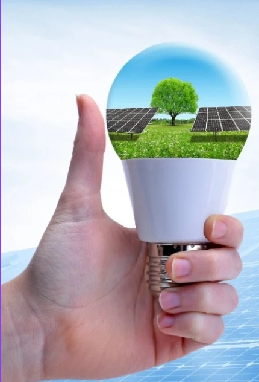
Chương 01 — Thích ứng
Nếu trước đây các đợt nắng nóng cực đoan thường được xem là hiện tượng thời tiết bất thường thì nay chúng đang dần định hình lại cách con người sinh sống, làm việc và tiêu thụ năng lượng.
Nhiệt độ tại nhiều quốc gia liên tục vượt ngưỡng 45°C. Những đợt nắng nóng cực đoan xuất hiện sớm hơn, kéo dài hơn và dữ dội hơn bất kỳ thời điểm nào trong lịch sử quan trắc hiện đại. Nhu cầu điện toàn cầu cũng liên tục lập nhiều kỷ lục mới để thích ứng với khí hậu ngày càng khắc nghiệt.
Tại nhiều quốc gia, việc vận hành hệ thống làm mát trong nhà ở, bệnh viện, trường học hay các cơ sở sản xuất không còn là nhu cầu theo mùa mà đã trở thành yêu cầu thiết yếu quanh năm. Cùng với quá trình đô thị hóa và sự gia tăng của các thiết bị điện, nhu cầu tiêu thụ điện năng trên toàn cầu ngày càng leo thang.
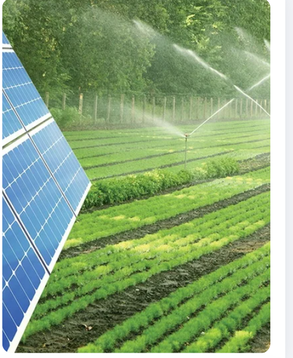
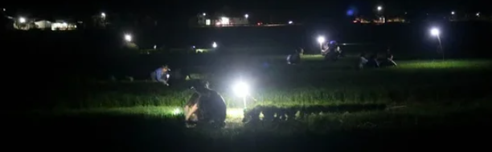
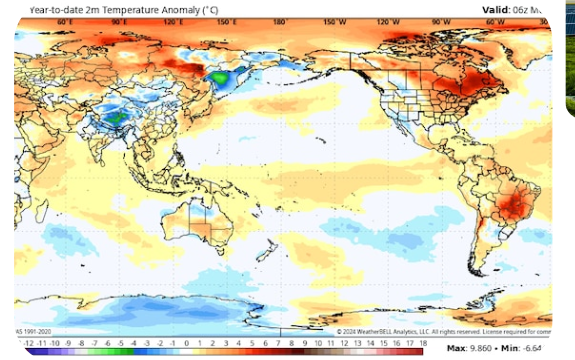
Theo Cơ quan Năng lượng Quốc tế (IEA), nhu cầu điện thế giới đang tăng với tốc độ nhanh nhất trong nhiều năm trở lại đây, trong đó các đợt nắng nóng kéo dài là một trong những nguyên nhân quan trọng thúc đẩy mức tiêu thụ điện cho làm mát. Tại nhiều quốc gia, hệ thống điện liên tiếp ghi nhận các mức phụ tải kỷ lục trong mùa hè để đáp ứng nhu cầu sử dụng điều hòa và các thiết bị chống nóng.
Áp lực bảo đảm nguồn cung điện trong bối cảnh khí hậu ngày càng khắc nghiệt đang khiến các quốc gia đẩy nhanh quá trình chuyển đổi năng lượng. Trong số các nguồn năng lượng tái tạo, điện mặt trời nổi lên như một lựa chọn quan trọng nhờ khả năng triển khai nhanh, chi phí ngày càng giảm và tiềm năng phát triển ở quy mô lớn.
"Liệu chính hiện tượng nóng lên toàn cầu có đang làm suy giảm hiệu quả và tính ổn định của nguồn năng lượng được xem là trụ cột của tương lai xanh?"
Chương 02 — Chuyển dịch
Trước áp lực cắt giảm phát thải khí nhà kính và bảo đảm an ninh năng lượng, nhiều quốc gia đã đặt cược vào năng lượng tái tạo, trong đó năng lượng mặt trời nổi lên như công nghệ phát triển nhanh nhất.
Theo Tổ chức Khí tượng Thế giới (WMO), năm 2024 là năm nóng nhất từng được ghi nhận từ khi có số liệu quan trắc hiện đại, với nhiệt độ trung bình toàn cầu cao hơn khoảng 1,55°C so với thời kỳ tiền công nghiệp. Đến năm 2025, nhiệt độ toàn cầu tiếp tục nằm trong nhóm ba năm nóng nhất lịch sử, đánh dấu 11 năm liên tiếp nóng kỷ lục trên phạm vi toàn thế giới.
Nếu cách đây một thập niên điện mặt trời vẫn được xem là nguồn điện bổ trợ thì nay nó đã trở thành trụ cột trong chiến lược chuyển đổi năng lượng của hàng loạt nền kinh tế lớn. Từ các trang trại điện mặt trời trải dài trên sa mạc Trung Đông, Bắc Phi đến những mái nhà dân cư ở châu Âu, Mỹ hay châu Á, các tấm pin quang điện đang phủ kín những không gian từng phụ thuộc vào nhiên liệu hóa thạch.
Riêng năm 2025, thế giới đã bổ sung hơn 600 GW công suất điện mặt trời mới, nâng tổng công suất lắp đặt toàn cầu lên khoảng 2.800 GW. Điện mặt trời chiếm hơn ba phần tư tổng công suất năng lượng tái tạo mới và được dự báo sẽ chiếm gần 80% mức tăng trưởng giai đoạn 2025–2030, trở thành lựa chọn ưu tiên trong cuộc đua hướng tới mục tiêu Net Zero.
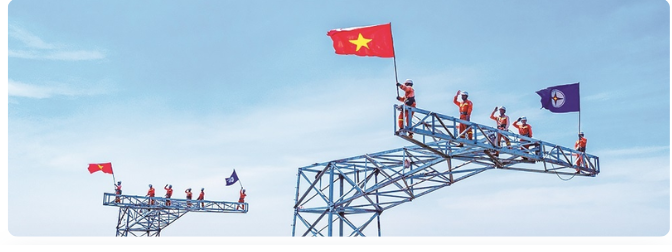
Những hàng dài mô-đun quang điện trải dài hàng km khắp sa mạc phía nam Abu Dhabi là hình ảnh tiêu biểu cho kỷ nguyên mới. Nhà máy điện Al Dhafra với công suất khoảng 2 gigawatt chứng minh rằng điện mặt trời quy mô lớn đang trở thành một trong những công cụ hiệu quả nhất để đa dạng hóa nguồn năng lượng của các nền kinh tế dựa vào dầu mỏ.
Tuy nhiên, đằng sau tốc độ phát triển ấn tượng của năng lượng mặt trời là những rủi ro ngày càng hiện hữu từ chính các tác động của biến đổi khí hậu. Khi nhiệt độ toàn cầu liên tục lập kỷ lục mới và các hiện tượng thời tiết cực đoan xuất hiện với tần suất dày đặc hơn, cơ sở hạ tầng năng lượng tái tạo cũng trở nên dễ bị tổn thương hơn trước các điều kiện môi trường khắc nghiệt. Quy mô càng lớn thì những rủi ro đối với hệ thống cũng càng trở nên đáng chú ý.
Ở cấp độ hạ tầng, điện mặt trời không còn là các cụm lắp đặt rời rạc. Những trang trại quy mô gigawatt đòi hỏi quy hoạch lưới điện, bảo trì bề mặt pin, quản lý bụi và điều độ công suất ở mức chính xác hơn.
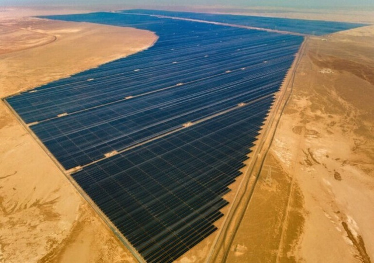
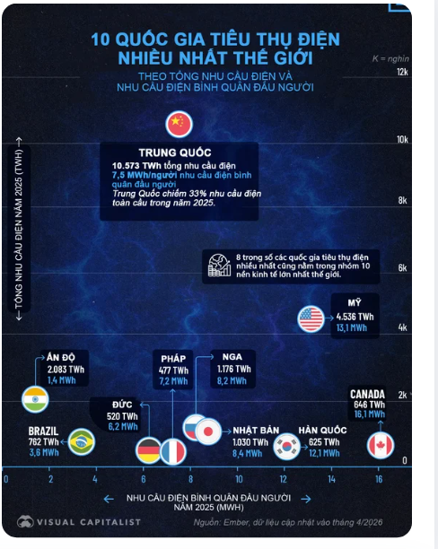
Chương 03 — Nghịch lý
Nghịch lý đáng lo ngại: chính điều kiện khí hậu thúc đẩy nhu cầu năng lượng tái tạo lại đang gây ra những rủi ro mới cho hệ thống điện mặt trời.
Thông thường, nhiều người cho rằng càng nắng nóng thì điện mặt trời càng tạo ra nhiều điện năng. Tuy nhiên, các tấm pin quang điện hoạt động dựa trên bức xạ ánh sáng mặt trời chứ không phụ thuộc trực tiếp vào nhiệt độ môi trường. Và đây chính là điểm mấu chốt của nghịch lý này.
Trên thực tế, nhiệt độ quá cao lại là một trong những yếu tố làm suy giảm hiệu suất của hệ thống điện mặt trời. Theo các nghiên cứu kỹ thuật, phần lớn tấm pin silicon hiện nay được đánh giá hiệu suất ở điều kiện tiêu chuẩn 25°C. Khi nhiệt độ vượt ngưỡng này, điện áp đầu ra của mô-đun quang điện bắt đầu giảm — trung bình, công suất phát điện có thể suy giảm khoảng 0,3–0,5% cho mỗi 1°C nhiệt độ tăng thêm.
Điều đó đồng nghĩa với việc trong các đợt nắng nóng cực đoan, khi nhiệt độ bề mặt tấm pin có thể vượt 60°C, lượng điện tạo ra sẽ thấp hơn đáng kể so với điều kiện vận hành lý tưởng. Nhiều nghiên cứu thực địa tại Trung Đông, Ấn Độ và khu vực Đông Nam Á đã ghi nhận hiện tượng suy giảm sản lượng điện mặt trời trong những giai đoạn nhiệt độ duy trì ở mức cao trong thời gian dài.
"Ánh nắng là điều kiện để tạo ra điện mặt trời, nhưng nắng nóng cực đoan và thời tiết khắc nghiệt lại đang trở thành thách thức đối với chính nguồn năng lượng này."
Không chỉ nhiệt độ, quá trình nóng lên toàn cầu còn kéo theo hàng loạt yếu tố bất lợi khác đối với hệ thống điện mặt trời. Cháy rừng ngày càng nghiêm trọng tại Canada, Australia hay miền Tây Hoa Kỳ tạo ra lượng lớn bụi và khói trong khí quyển, làm giảm lượng bức xạ mặt trời tới bề mặt pin. Tại nhiều khu vực khô hạn, tình trạng sa mạc hóa và bão bụi khiến các tấm pin nhanh bám bẩn hơn, làm tăng chi phí bảo trì và vệ sinh hệ thống.
Trong khi đó, tại các khu vực ven biển nhiệt đới, độ ẩm cao và hơi muối trong không khí có thể đẩy nhanh quá trình ăn mòn vật liệu, ảnh hưởng đến tuổi thọ thiết bị. Các hiện tượng thời tiết cực đoan như mưa đá, giông lốc hay bão mạnh cũng làm gia tăng nguy cơ hư hỏng hạ tầng điện mặt trời, từ tấm pin, giá đỡ cho đến hệ thống truyền tải điện.
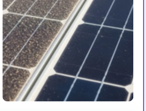
Báo cáo kWh Analytics 2026
Báo cáo Đánh giá Rủi ro Điện mặt trời 2026 của kWh Analytics, tổng hợp 19 nghiên cứu từ các tổ chức và doanh nghiệp trong ngành năng lượng toàn cầu, cho thấy thời tiết cực đoan vẫn là nguyên nhân gây thiệt hại tài chính lớn nhất đối với các dự án điện mặt trời. Nắng nóng kéo dài, bão, mưa đá, cháy rừng không chỉ làm gia tăng chi phí vận hành và bảo trì mà còn ảnh hưởng trực tiếp đến hiệu suất phát điện và tuổi thọ của hệ thống.
Nhận định về xu hướng này, ông Jason Kaminsky, Giám đốc điều hành kWh Analytics, cho rằng thời tiết cực đoan vẫn là một trong những nguyên nhân quan trọng gây tổn thất cho các dự án điện mặt trời quy mô lớn và ngành năng lượng đang phải đẩy nhanh các giải pháp quản trị rủi ro để thích ứng với thực tế mới. Theo ông, những hệ thống điện mặt trời được xây dựng hôm nay sẽ phải vận hành ổn định trong hơn 30 năm tới — trong khi khí hậu đang trở nên ngày càng khó dự đoán hơn.
Điều này cho thấy thách thức đối với năng lượng mặt trời không còn dừng lại ở bài toán công nghệ hay chi phí đầu tư. Trong bối cảnh khí hậu toàn cầu tiếp tục biến đổi theo chiều hướng cực đoan hơn, khả năng chống chịu và thích ứng của các hệ thống điện mặt trời đang trở thành một yếu tố quan trọng của an ninh năng lượng.
Chương 04 — Việt Nam
Những thách thức của ngành điện mặt trời toàn cầu ngày càng trở nên đáng lưu tâm tại Việt Nam — một trong những quốc gia chịu tác động mạnh nhất của biến đổi khí hậu.
Trong bối cảnh Việt Nam đang đẩy mạnh chuyển đổi năng lượng để thực hiện cam kết Net Zero vào năm 2050, việc Chính phủ ban hành Nghị định 58/2025/NĐ-CP đã cho thấy điện mặt trời không còn chỉ là một xu hướng công nghệ mà đã trở thành một bộ phận quan trọng trong chiến lược an ninh năng lượng quốc gia.
Nghị định 58/2025/NĐ-CP đánh dấu bước chuyển rõ rệt trong tư duy quản lý điện mặt trời của Việt Nam — từ giai đoạn phát triển nhanh dựa trên cơ chế giá FIT sang mô hình phát triển có kiểm soát, ưu tiên tính ổn định và bền vững của hệ thống điện. Nhà nước khuyến khích hộ gia đình và tổ chức phát triển điện mặt trời mái nhà theo hình thức "tự sản xuất, tự tiêu thụ", đồng thời thiết lập các yêu cầu chặt chẽ về xây dựng, phòng cháy chữa cháy, đấu nối kỹ thuật và quản lý công suất.
Nghị định 58/2025/NĐ-CP
Bước chuyển từ cơ chế FIT sang mô hình "tự sản xuất, tự tiêu thụ" phản ánh xu hướng toàn cầu: phát triển điện mặt trời không chỉ để mở rộng công suất, mà còn phải đảm bảo hệ thống vận hành ổn định và an toàn trước biến đổi khí hậu. Việc thu hồi Giấy chứng nhận đăng ký phát triển nếu sau 60 ngày không triển khai lắp đặt cho thấy Nhà nước hướng tới tính thực chất, tránh đầu cơ chính sách hoặc phát triển thiếu kiểm soát.
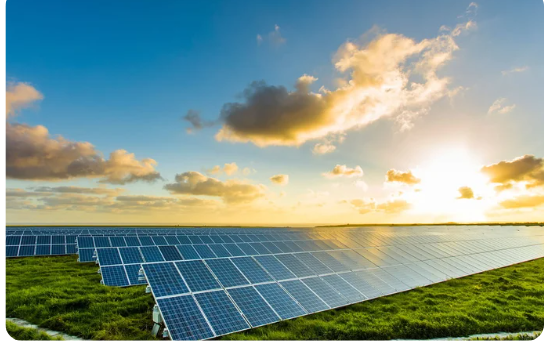
Những năm gần đây, các đợt nắng nóng diện rộng liên tục xuất hiện tại nhiều địa phương, đặc biệt ở khu vực Bắc Bộ và miền Trung. Nhiệt độ ngoài trời nhiều thời điểm vượt ngưỡng 40°C, trong khi nhiệt độ trên mái nhà hoặc bề mặt công trình có thể cao hơn đáng kể. Điều này đặt ra những yêu cầu mới đối với các hệ thống điện mặt trời mái nhà vốn đang được khuyến khích phát triển mạnh trong thời gian tới.
"Liệu hệ thống điện mặt trời của Việt Nam có đủ khả năng thích ứng trước tác động ngày càng nghiêm trọng của nóng lên toàn cầu hay không?"
Khi nhiệt độ cực đoan gia tăng, các hiện tượng bão mạnh, cháy nổ do quá nhiệt, ô nhiễm không khí và biến động thời tiết ngày càng phức tạp, hiệu suất và độ an toàn của điện mặt trời mái nhà cũng đứng trước nhiều rủi ro mới. Chính vì vậy, những quy định trong Nghị định 58 như yêu cầu kiểm soát kỹ thuật, tiêu chuẩn thiết bị, đấu nối an toàn hay cơ chế quản lý công suất không chỉ mang tính hành chính mà còn phản ánh nhu cầu cấp thiết phải xây dựng một hệ thống năng lượng tái tạo có khả năng chống chịu với biến đổi khí hậu.
Đặc biệt, việc Nghị định 58 quy định thu hồi Giấy chứng nhận đăng ký phát triển nếu sau 60 ngày không triển khai lắp đặt cho thấy Nhà nước đang hướng tới tính thực chất và hiệu quả trong phát triển điện mặt trời, tránh tình trạng đầu cơ chính sách hoặc phát triển thiếu kiểm soát như giai đoạn trước.
Trong bối cảnh nhu cầu điện tiếp tục gia tăng và các hiện tượng thời tiết cực đoan được dự báo sẽ xuất hiện thường xuyên hơn, khả năng thích ứng của hệ thống điện mặt trời sẽ trở thành một trong những yếu tố quan trọng quyết định hiệu quả của quá trình chuyển đổi năng lượng tại Việt Nam. Ba nhóm đối tượng chính được khuyến khích là hộ dân, cơ quan công sở và doanh nghiệp — tạo nền tảng cho một hệ sinh thái điện mặt trời phân tán rộng khắp trên toàn quốc.
Đây không chỉ là câu chuyện của ngành điện, mà còn là một phần của bài toán bảo đảm an ninh năng lượng quốc gia trong kỷ nguyên biến đổi khí hậu.
Chương 05 — Giải pháp
Bài toán phát triển điện mặt trời không còn chỉ là mở rộng quy mô lắp đặt, mà phải đặt trong chiến lược thích ứng toàn diện với biến đổi khí hậu.
Trước xu hướng gia tăng của các đợt nắng nóng cực đoan, bão mạnh, cháy rừng và các hiện tượng thời tiết bất thường, nhiều chuyên gia cho rằng bài toán phát triển điện mặt trời không còn chỉ là mở rộng quy mô lắp đặt mà phải đặt trong chiến lược thích ứng với biến đổi khí hậu.
Theo các khuyến nghị của Cơ quan Năng lượng Tái tạo Quốc tế (IRENA), khả năng chống chịu cần được tích hợp ngay từ giai đoạn quy hoạch, thiết kế, xây dựng cho tới vận hành các dự án năng lượng tái tạo. Thay vì dựa trên các điều kiện khí hậu trong quá khứ, các dự án điện mặt trời cần tính đến những kịch bản nhiệt độ cao hơn, bão mạnh hơn hoặc lượng mưa cực đoan hơn trong tương lai.
IRENA — Dấu mốc chiến lược
Việt Nam chính thức trở thành thành viên của Cơ quan Năng lượng Tái tạo Quốc tế (IRENA) từ ngày 07/11/2024 — một bước ngoặt chiến lược, khẳng định cam kết mạnh mẽ của quốc gia đối với mục tiêu phát thải ròng bằng 0 và thúc đẩy chuyển dịch năng lượng công bằng.
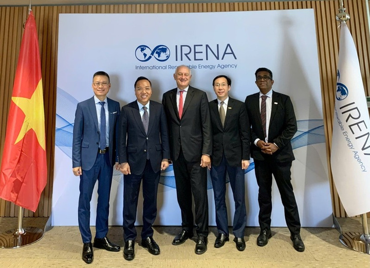
Về mặt công nghệ, các nhà sản xuất đang phát triển những thế hệ tấm pin có hệ số nhiệt thấp hơn nhằm hạn chế suy giảm hiệu suất khi nhiệt độ tăng cao. Bên cạnh đó, việc tối ưu hệ thống thông gió, lựa chọn vật liệu chống ăn mòn, chống bụi và nâng cao khả năng chịu gió của kết cấu giá đỡ cũng được xem là những giải pháp quan trọng đối với các khu vực thường xuyên chịu tác động của thời tiết cực đoan.
Các chuyên gia cũng nhấn mạnh vai trò của hệ thống lưu trữ năng lượng và lưới điện thông minh trong việc nâng cao độ tin cậy của nguồn điện tái tạo. Khi điện mặt trời ngày càng chiếm tỷ trọng lớn trong cơ cấu năng lượng, pin lưu trữ và các công nghệ điều độ linh hoạt sẽ giúp giảm nguy cơ gián đoạn nguồn cung trong những thời điểm thời tiết bất lợi, đồng thời tăng khả năng phục hồi của hệ thống sau thiên tai.
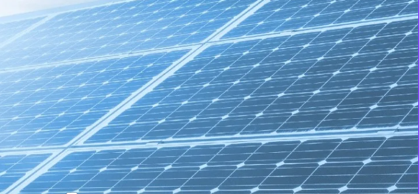
"Vấn đề cốt lõi không còn là phát triển điện mặt trời hay không, mà là phát triển như thế nào để các hệ thống năng lượng sạch có thể vận hành an toàn, hiệu quả và bền vững."
Nóng lên toàn cầu đang đặt ra những thách thức mới đối với năng lượng mặt trời, nhưng điều đó không làm thay đổi vai trò của nguồn năng lượng này trong quá trình chuyển đổi xanh. Quá trình chuyển đổi xanh không chỉ đòi hỏi mở rộng quy mô năng lượng tái tạo, mà còn phải bảo đảm các nguồn năng lượng này đủ bền vững trước những rủi ro do chính biến đổi khí hậu gây ra.
Điều này đặt ra yêu cầu mới đối với toàn bộ chuỗi giá trị của ngành năng lượng mặt trời: từ nhà sản xuất tấm pin và thiết bị phụ trợ, nhà đầu tư và đơn vị vận hành dự án, các cơ quan quản lý nhà nước, đến từng hộ gia đình lắp đặt điện mái nhà. Tất cả đều cần nâng cao nhận thức và năng lực thích ứng trong bối cảnh khí hậu mới.
Bài toán không nằm ở việc lắp thêm bao nhiêu tấm pin, mà ở việc xây dựng hệ thống điện mặt trời đủ bền bỉ trước một khí hậu ngày càng khắc nghiệt — để ánh sáng của ngày mai không bị xóa nhòa bởi chính sức nóng của hôm nay.
Quá trình chuyển đổi xanh đòi hỏi không chỉ quy mô lớn hơn, mà còn cần sự bền vững trước chính những rủi ro do biến đổi khí hậu gây ra.